دایرهای به مرکز مبدأ مختصات و شعاع ۱ را در نظر بگیرید.
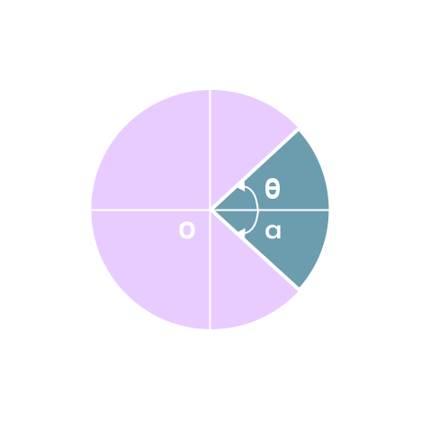اگر با حرکت در خلاف جهت عقربههای ساعت به نقطهای مانند \(P\) برسیم، زاویه \( A\overset{\wedge}{O}C \) مثبت است و اگر با حرکت در جهت عقربههای ساعت به نقطهای مانند \( Q \) برسیم، زاویه \( A\overset{\wedge}{O}Q \) منفی است. چنین دایرهای را یک دایرهٔ مثلثاتی مینامیم.
در هر یک از دایرههای مثلثاتی سمت راست، مقدار زاویههای \( 90^0\)، \(-90^0\)، \( -210^0°\)، و \(225^0\) داده شدهاست.
۱. هر یک از زاویههای زیر را روی دایرههای مثلثاتی داده شده، نشان دهید.
 
۲. فرض کنید \( P(x, y) \) نقطهای دلخواه روی دایرهٔ مثلثاتی روبهرو باشد و \( \theta \) زاویهای است که نیمخط \( \overrightarrow{OP} \) با محور \( O_x \) میسازد. از نقطهٔ \( P \) خطی بر محور \( \overrightarrow{O_x} \) عمود میکنیم و محل برخورد را \( Q \) مینامیم.
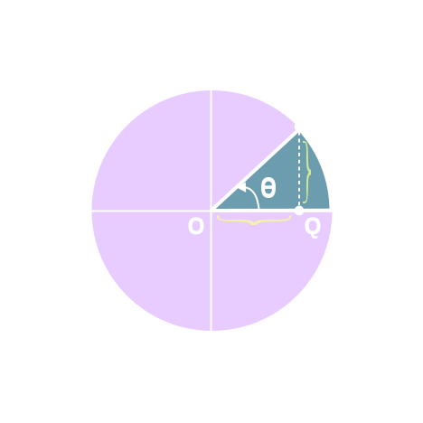(الف) در مثلث \( OPQ \)، نسبتهای مثلثاتی زاویه \( \theta \) را بهدست آورید.
$$ \cos \theta = \ \ . . . . \qquad \sin \theta = \ \ . . . . \qquad \tan \theta = \ \ . . . . $$
(ب) با توجه به قسمت (الف) میتوان دید فاصله \( Q \) تا مبدا با \( . . . . \) برابر است و فاصله نقطه \( P \) تا پای عمود، یعنی نقطه \( Q \) با \( . . . . \) برابر است.
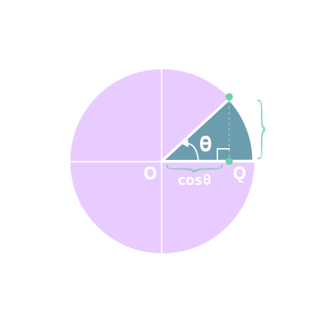با توجه به قسمت (ب) محور \( x'ox \) یا محور \( x \) را محور کسینوسها و محور \( y'oy \) یا محور \( y \) را محور سینوسها مینامیم. بهعبارت دیگر، اگر \( P \) نقطهای دلخواه روی دایرهٔ مثلثاتی باشد که نیمخط \( OP \) با قسمت مثبت محور \( O_x \) زاویه \(\theta \) میسازد، آنگاه \( P \) نقطهای با مختصات \( (x, y) \) است که در آن \( x = \cos \theta \) و \( y = \sin\theta \) است.
نکته: دو محور عمود بر هم \( x'ox \) و \( y'oy \) صفحه را به چهار قسمت تقسیم میکنند. هر یک از این قسمتها را یک ناحیه یا یک ربع مثلثاتی مینامیم. با توجه به جهت دایرهٔ مثلثاتی، ناحیه \( xoy \) را ربع اول، ناحیهٔ \( x'oy \) را ربع دوم، ناحیهٔ \( x'oy' \) را ربع سوم، و ناحیهٔ \( xoy' \) را ربع چهارم مثلثاتی مینامیم.
نکته: زاویههای \( 270^0 \)، \( 180^0 \)، \( 90^0 \)، و \( 360^0 \) زاویههای مرزی هستند و آنها را در هیچکدام از ناحیههای فوق در نظر نمیگیریم.
۱. مشخص کنید انتهای کمان مربوط به هر یک از زاویههای زیر در کدام یک از نواحی چهارگانه قرار میگیرد؟
\[ -95^0 \text{(ت)} \ \quad \quad \ 182^0 \text{(پ)} \ \quad \quad \ 65^0 \text{(ب)} \ \quad \quad \ -30^0 \text{(الف)} \ \]
۲. با توجه به آنچه در فعالیت قبل، بهدست آوردید، توضیح دهید که اگر انتهای کمان روبهرو به زاویهای در ربع اول باشد (زاویه در ربع اول باشد)، آنگاه چرا نسبتهای مثلثاتی آن زاویه، همگی مثبتاند؟
میخواهیم نسبتهای مثلثاتی زاویه \( 0^0 \) را بهدست آوریم. میدانیم در دایرهٔ مثلثاتی روبهرو، \( \cos \theta = x \) و \( \sin \theta = y \). اگر \( \theta = 0^0 \)، آنگاه نقطه \( P \) روی نقطه \( A \) قرار میگیرد و داریم \( \sin 0^0 = 0 \)، \( \cos 0^0 = 1 \)، و \( \tan 0^0 = \frac{y}{x} = \frac{0}{1} = 0 \) اما \( \cot 0^0 \) تعریف نمیشود (چرا؟).
۱. در دایرهٔ مثلثاتی روبهرو اگر \( \theta = 90^0 \)، نسبتهای مثلثاتی \( \theta \) را پیدا کنید.
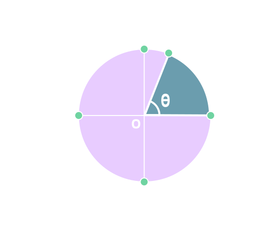۲. اگر \( \theta = 180^0 \)، نسبتهای مثلثاتی \( \theta \) را پیدا کنید.
۳. اگر \(\theta = 270^0 \)، نسبتهای مثلثاتی \( \theta \) را پیدا کنید.
با توجه به نتایج بالا جدول زیر را کامل کنید:
| مقدار | \(0^0\) | \(90^0\) | \(180^0\) | \(270^0\) | \(360^0\) |
|---|---|---|---|---|---|
| \(\sin \theta \) | $0$ | $0$ | $-1$ | 0 | |
| \(\cos \theta \) | $-1$ | ||||
| \(\tan \theta \) | تعریف نشده | $0$ | |||
| \(\cot \theta\) | تعریف نشده |
$\alpha$ در ربع اول است $0^0 < \alpha < 90^0 \Rightarrow$
$\alpha$ در ربع دوم است $90^0 < \alpha < 180^0 \Rightarrow$
$\alpha$ در ربع سوم است $180^0 < \alpha < 270^0 \Rightarrow$
$\alpha$ در ربع چهارم است $270^0 < \alpha < 360^0 \Rightarrow$
۱. فرض کنید \( \theta \) زاویهای در ربع سوم دایرهٔ مثلثاتی باشد. با توجه به اینکه \( x = \cos \theta \) و \( y = \sin \theta \) و در ربع سوم، \( x < 0 \) و \( y < 0 \)، علامت هر یک از نسبتهای مثلثاتی \( \theta \) را در ربع سوم مشخص کنید.
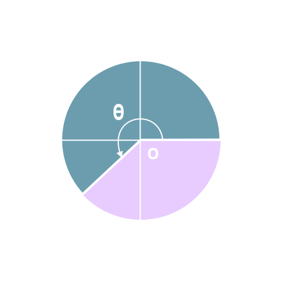۲. فرض کنید \( \alpha \) زاویهای در دایرهٔ مثلثاتی در ربع دوم باشد. فعالیت قبل را برای \( \alpha \) نیز تکرار کنید.
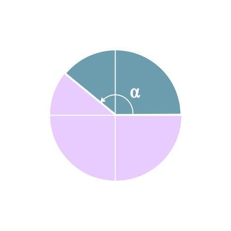۳. جدول زیر را کامل کنید:
| مقدار | ربع اول \( x,y > 0 \) | ربع دوم $. . . .$ |
ربع سوم $. . . . $ |
ربع چهارم $ . . . . $ |
|---|---|---|---|---|
| \(\sin \theta \) | + | |||
| \(\cos \theta \) | – | |||
| \(\tan \theta \) | + | |||
| \(\cot \theta \) | – |
برای هر زاویه دلخواه \( \theta \):
\[ -1 \leq \cos \theta \leq 1 \quad \text{و} \quad -1 \leq \sin \theta \leq 1 \]
آقای جلالی، از دانشآموزان پرسید: اگر \( \theta \) زاویهای در ربع دوم مثلثاتی باشد و \( \sin \theta = \frac{5}{7} \)، آیا میتوان سایر نسبتهای مثلثاتی \( \theta \) را پیدا کرد؟
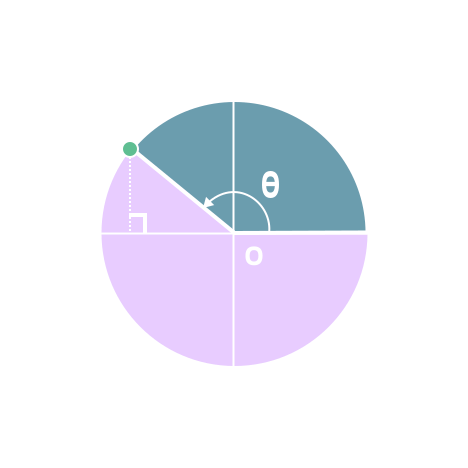امین: میدانیم \( \sin \theta = y = \frac{5}{7} \)، بنابراین \( P \) نقطهای به عرض \( . . . . \) است.
معلم: درست است و حالا طول نقطه \( P \) چگونه بهدست میآید؟
امیرعلی: طبق رابطهٔ فیثاغورس، در مثلث قائمالزاویه داریم: \( x^2 + y^2 = 1 \)، بنابراین \( x^2 = \frac{24}{49} \). پس داریم \( x = . . . . \).
معلم: آفرین، این راه کاملاً درست است، ولی کدام مقدار قابل قبول است؟
محمد مهدی: چون \( \theta \) زاویهای در ربع \( . . . . \) است، پس طول نقطه \( P \) منفی است و از اینرو \( x = . . . . \) قابل قبول است.
معلم: استدلال محمد مهدی کاملاً منطقی است و \( P \) نقطهای به مختصات \( \left(. . . ., . . . .\right) \) است. در نتیجه:
$ \cot \theta = \frac{\qquad}{\qquad} = \frac{ \qquad}{\qquad} $
$ \tan \theta = \frac{y}{x} = \frac{\qquad}{\qquad} $
$ \cos \theta = x = \ \ . . . . $
۱. فرض کنید نقطه \( P \) روی دایرهٔ مثلثاتی قرار دارد بهطوری که \( \cos \theta = -\frac{\sqrt{2}}{2} \). میدانیم \( \theta \) در ربع سوم مثلثاتی قرار دارد، بنابراین \( y = \sin \theta = \ \ . . . . \).

(الف) مختصات نقطه \( P \) را بهدست آورید.
(ب) سایر نسبتهای مثلثاتی زاویه \( \theta \) را بهدست آورید.
۲. اگر \( \cos \alpha = \frac{-2}{5} \)، آنگاه در مورد ناحیهای که \( \alpha \) در آن قرار میگیرد، بحث کنید.
۳. زاویهای مثال بزنید که سینوس آن منفی و کسینوس آن مثبت باشد.
نمودار خط \( y = 2x - 4 \) در شکل روبهرو رسم شده است. دو نقطه \( B \) و \( C \) روی این خط را درنظر بگیرید و خطی از آنها به محور \( x \) عمود کنید. پای عمودها را به ترتیب \( E \) و \( F \) بنامید.
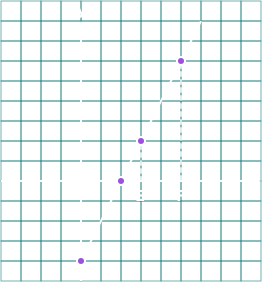(الف) تانژانت زاویه \( \alpha \) را بهدست آورید.
(ب) شیب این خط را پیدا کنید.
\[ \text{شیب خط} = \frac{\text{تفاضل عرضها}}{\text{تفاضل طولها}} = \ \ . . . . . . . . \]
(پ) از مقایسه قسمت (الف) و (ب) چه نتیجهای میگیرید؟ توضیح دهید.
۱. مراحل فعالیت بالا را برای خطهای زیر، تکرار کنید.
(الف) \( 2y-3x=5 \)
(ب) \( x + y = 2 \)
۲. معادلهٔ خطی را بنویسید که زاویهٔ آن با جهت مثبت محور \( x \)ها \( 30^0 \) است و از نقطهٔ \( (0, 1) \) میگذرد.
۱. هر یک از زاویههای زیر را روی دایرهٔ مثلثاتی رسم کنید. سپس مشخص کنید در کدام یک از نواحی چهارگانه قرار میگیرد.
(الف) \( +270^0 \)
(ب) \( 225^0 \)
(پ) \( -135^0 \)
(ت) \( 185^0 \)
۲. در هر یک از موارد زیر، نسبت مثلثاتی زاویهٔ داده شده است. سایر نسبتهای مثلثاتی را بهدست آورید.
(الف) \( \cos \alpha = \frac{3}{7} \) (در ربع چهارم)
(ب) \( \sin \beta = \frac{-1}{2} \) (در ربع سوم)
۳. اگر \( \sin \theta \) و \( \tan \theta \) هم علامت باشند، آنگاه \( \theta \) در کدام ربع مثلثاتی قرار دارد؟
۴. حدود زاویهٔ \( \theta \) را در هر یک از حالات زیر مشخص کنید.
(الف) \( \sin \theta > 0 \), \( \cos \theta > 0 \)
(ب) \( \sin \theta < 0 \), \( \cos \theta > 0 \)
۵. اگر \( \sin \alpha \times \cos \alpha < 0 \)، آنگاه \( \alpha \) در کدام یک از نواحی چهارگانه میتواند قرار بگیرد؟ چرا؟
۶. زاویهای مثل \( \alpha \) پیدا کنید بهطوری که \( \tan \alpha > \cot \alpha \). اکنون زاویهای مثل \( \beta \) پیدا کنید، بهطوری که \( \cot \beta > \tan \beta \). از این تمرین چه نتیجهای میگیرید؟
۷. در تمرین ۶ بهجای تانژانت و کتانژانت، به ترتیب سینوس و کسینوس قرار دهید و در مورد آن بحث کنید.
۸. معادله خطی را بنویسید که زاویهٔ آن با جهت مثبت محور \( x \)ها \( 45^0 \) است و نقطهٔ \( (0, 2) \) روی آن قرار دارد.
۹. با توجه به شکل زیر، معادلهٔ خط \( \mathscr{l} \) را بهدست آورید.
در اخترشناسی، اغلب به مسئلههایی برمیخوریم که برای حل آنها به مثلثات نیازمندیم. سادهترین این مسئلهها، پیدا کردن یک کمان دایره برحسب درجه است. پیدایش مثلثات براساس روابط بین کمانها و وترها بوده است. کهنترین جدولی که به ما رسیده است و در آن طول وترهای کمانها داده شده است، متعلق به یک بابلی در اخترشناسی است. این جدول را تقریباً ۳۰۰ درجه به درجه تنظیم کرده و کروی را نخستین گام در راه پیدایش مثلثات دانست. همه کارهای ریاضیدانان و اخترشناسان یونانی در دوران هندسه انجام گرفت و هرگز به مفهوم مثلثات اصلی مثلثات نرسیدند. خورازمی نخستین جدولهای سینوسی را تنظیم کرد و پس از او همه ریاضیدانان ایرانی گامهایی در جهت تکمیل این جدول و گسترش مفهوم مثلثاتی برداشتند. مرزوی جدول سینوسها را تقریباً ۳ درجه به درجه تنظیم کرد و برای نخستین بار به دلیل نیازهای اخترشناسی مفهوم تانژانت را تعریف کرد. جدیترین تلاشها بهوسیله ابو ریحان بیرونی و ابوالوفای بوزجانی انجام گرفت و سرانجام خواجه نصیرالدین طوسی با جمعبندی کارهای دانشمندان ایرانی بیش از خود، نخستین کتاب مستقل مثلثات را نوشت. بعد از طوسی، جمشید کاشانی ریاضیدان ایرانی با استفاده از روش نیاکان که برای حل معادله درجه سوم پیدا کرده بود، توانست راهی را برای محاسبه سینوس کمان یک درجه با هر دقت دلخواه پیدا کند. پیشرفت بعدی در مثلثات از سدهٔ پانزدهم میلادی و در اروپای غربی انجام گرفت.